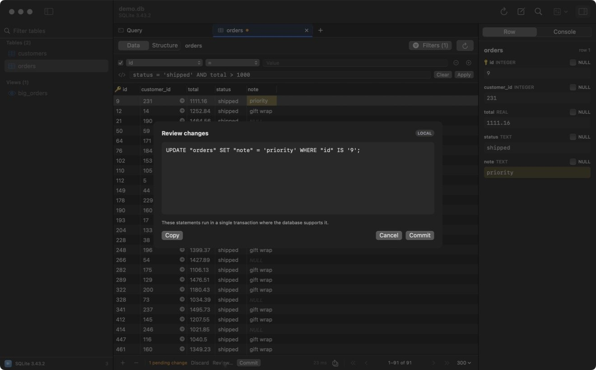

Edit rows
Edits are staged in the grid first. You see them coloured, review the generated SQL or commands, and commit them together in one transaction.
yellow: changedgreen: new rowred: deleted row
Make changes
- Edit a cell: double-click it, type, press ↵. ⇥ moves to the next cell.
- Set NULL or empty: right-click the cell. In the Row panel, tick NULL.
- Add a row: ⌘I or + at the bottom left.
- Duplicate a row: ⌘D.
- Delete rows: select them and press ⌫.
The bottom bar counts pending changes and the tab title gets a dot.
Review and commit
- Review
Click Review… or press ⇧⌘S. The window lists the exact statements, for example
UPDATE "orders" SET "note" = 'priority' WHERE "id" IS '9';. Copy puts them on the clipboard.
- Commit
Click Commit, or press ⌘S in the grid to commit without the review step. On engines with transactions, all statements run in one transaction: if one fails, none are applied.
- Or discard
Click Discard in the bottom bar to throw away every pending change.
Tables without a primary keyTabulo shows "No primary key — edits match on all columns". Updates and deletes then use every column in the WHERE clause, so check the review before you commit.
Production connectionsOn production connections, and any connection with Safe mode on, the review always opens before a commit. See Safe mode & environments.